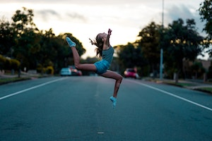

Tennis
Tennis is a racket sport that is played either individually against a single opponent or between two teams of two players each. Each player uses a tennis racket that is strung with cord to strike a hollow rubber ball covered with felt over or around a net and into the opponent's court.
Basketball
Basketball is a team sport in which two teams, most commonly of five players each, opposing one another on a rectangular court, compete with the primary objective of shooting a basketball through the defender's hoop, while preventing the opposing team from shooting through their own hoop.
Gymnastics
Gymnastics is a type of sport that includes physical exercises requiring balance, strength, flexibility, agility, coordination, and endurance. The movements involved in gymnastics contribute to the development of the arms, legs, shoulders, back, chest, and abdominal muscle groups.
Football

Football, often referred to as the beautiful game, is a globally popular sport that captures the hearts of millions. Played with passion and skill, football unites people of different backgrounds, cultures, and ages. It is a thrilling game of strategy, teamwork, and athleticism, where players showcase their agility, speed, and precision.
Cricket
Cricket is a sport that requires the use of a bat and ball. It is easily one of the most prevalent sports in the world. This game consists of two teams that include 11 players each. The main aim of the game is to score the highest number of runs.
Chess
Chess is one of the oldest and most popular board games. It is played by two opponents on a checkered board with specially designed pieces of contrasting colours, commonly white and black. The objective of the game is to capture the opponent's king.